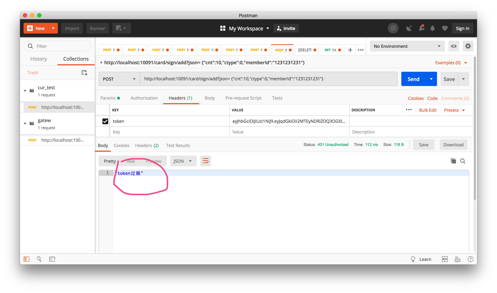

- 00 开篇导读.md.html
- 01 以真实“商场停车”业务切入——需求分析.md.html
- 02 具象业务需求再抽象分解——系统设计.md.html
- 03 第一个 Spring Boot 子服务——会员服务.md.html
- 04 如何维护接口文档供外部调用——在线接口文档管理.md.html
- 05 认识 Spring Cloud 与 Spring Cloud Alibaba 项目.md.html
- 06 服务多不易管理如何破——服务注册与发现.md.html
- 07 如何调用本业务模块外的服务——服务调用.md.html
- 08 服务响应慢或服务不可用怎么办——快速失败与服务降级.md.html
- 09 热更新一样更新服务的参数配置——分布式配置中心.md.html
- 10 如何高效读取计费规则等热数据——分布式缓存.md.html
- 11 多实例下的定时任务如何避免重复执行——分布式定时任务.md.html
- 12 同一套服务如何应对不同终端的需求——服务适配.md.html
- 13 采用消息驱动方式处理扣费通知——集成消息中间件.md.html
- 14 Spring Cloud 与 Dubbo 冲突吗——强强联合.md.html
- 15 破解服务中共性问题的繁琐处理方式——接入 API 网关.md.html
- 16 服务压力大系统响应慢如何破——网关流量控制.md.html
- 17 集成网关后怎么做安全验证——统一鉴权.md.html
- 18 多模块下的接口 API 如何统一管理——聚合 API.md.html
- 19 数据分库后如何确保数据完整性——分布式事务.md.html
- 20 优惠券如何避免超兑——引入分布式锁.md.html
- 21 如何查看各服务的健康状况——系统应用监控.md.html
- 22 如何确定一次完整的请求过程——服务链路跟踪.md.html
- 23 结束语.md.html
- 捐赠
17 集成网关后怎么做安全验证——统一鉴权
商场停车场景中，除了极少数功能不需要用户登陆外（如可用车位数），其余都是需要用户在会话状态下才能正常使用的功能。上个章节中提到，要在网关层实现统一的认证操作，本篇就直接带你在网关层增加一个公共鉴权功能，来实现简单的认证，采用轻量级解决方案 JWT 的方式来完成。
为什么选 JWT
JSON Web Token（缩写 JWT）是比较流行的轻量级跨域认证解决方案，Tomcat 的 Session 方式不太适应分布式环境中，多实例多应用的场景。JWT 按一定规则生成并解析，无须存储，仅这一点要完爆 Session 的存储方式，更何况 Session 在多实例环境还需要考虑同步问题，复杂度无形中又增大不少。
由于 JWT 的这种特性，导致 JWT 生成后，只要不过期就可以正常使用，在业务场景中就会存在漏洞，比如会话退出时，但 token 依旧可以使用（token 一旦生成，无法更改），此时就需要借助第三方的手段，来配置 token 的验证，防止被别有用意的人利用。
服务只有处于无状态条件下，才能更好的扩展，否则就需要维护状态，增加额外的开销，反而不利于维护扩展，而 JWT 恰恰帮助服务端实例做到了无状态化。
JWT 应用的两个特殊场景
- 会话主动退出。必须结合第三方来完成，如 Redis 方案：会话主动退出时，将 token 写入缓存中，后期所有请求在网关层验证时，先判定缓存中是否存在，若存在则证明 token 无效，提示去登陆。
- 用户一直在使用系统，但 JWT 失效。假如 JWT 有效期是 30 分钟，如果用户一直在使用，表明处于活跃状态，不能直接在 30 分钟后用用户踢出去登陆，用户体验很糟糕。依照 Session 方式下的解雇方案，只要用户在活跃，有效期就要延长。但 JWT 本身又无法更改，这时就需要刷新 JWT 来保证体验的流畅性。方案如下：当检测到即将过期或已经过期时，但用户依旧在活跃（如果判定在活跃？可以将用户的每次请求写入缓存，通过时间间隔判定），则生成新 token 返回给前端，使用新的 token 发起请求，直到主动退出或失效退出。
使用 JWT
在网关层引入 jar 包：
<!-- https://mvnrepository.com/artifact/io.jsonwebtoken/jjwt -->
<dependency>
<groupId>io.jsonwebtoken</groupId>
<artifactId>jjwt</artifactId>
<version>0.9.1</version>
</dependency>
编写 JWT 工具类
工具类功能集中于生成 token 与验证 token：
@Slf4j
public class JWTUtils {
/**
* 由字符串生成加密 key，此处的 key 并没有代码中写死，可以灵活配置
*
* @return
*/
public static SecretKey generalKey(String stringKey) {
byte[] encodedKey = Base64.decodeBase64(stringKey);
SecretKey key = new SecretKeySpec(encodedKey, 0, encodedKey.length, "AES");
return key;
}
/**
* createJWT: 创建 jwt<br/>
*
* @author guooo
* @param id 唯一 id，uuid 即可
* @param subject json 形式字符串或字符串，增加用户非敏感信息存储，如 user tid，与 token 解析后进行对比，防止乱用
* @param ttlMillis 有效期
* @param stringKey
* @return jwt token
* @throws Exception
* @since JDK 1.6
*/
public static String createJWT(String id, String subject, long ttlMillis, String stringKey) throws Exception {
SignatureAlgorithm signatureAlgorithm = SignatureAlgorithm.HS256;
long nowMillis = System.currentTimeMillis();
Date now = new Date(nowMillis);
SecretKey key = generalKey(stringKey);
JwtBuilder builder = Jwts.builder().setIssuer("").setId(id).setIssuedAt(now).setSubject(subject)
.signWith(signatureAlgorithm, key);
if (ttlMillis >= 0) {
long expMillis = nowMillis + ttlMillis;
Date exp = new Date(expMillis);
builder.setExpiration(exp);
}
return builder.compact();
}
/**
* parseJWT: 解密 jwt <br/>
*
* @author guooo
* @param jwt
* @param stringKey
* @return
* @throws ExpiredJwtException
* @throws UnsupportedJwtException
* @throws MalformedJwtException
* @throws SignatureException
* @throws IllegalArgumentException
* @since JDK 1.6
*/
public static Claims parseJWT(String jwt, String stringKey) throws ExpiredJwtException, UnsupportedJwtException,
MalformedJwtException, SignatureException, IllegalArgumentException {
SecretKey key = generalKey(stringKey);
Claims claims = Jwts.parser().setSigningKey(key).parseClaimsJws(jwt).getBody();
return claims;
}
public static boolean isTokenExpire(String jwt, String stringKey) {
Claims aClaims = parseJWT(jwt, stringKey);
// 当前时间与 token 失效时间比较
if (LocalDateTime.now().isAfter(LocalDateTime.now()
.with(aClaims.getExpiration().toInstant().atOffset(ZoneOffset.ofHours(8)).toLocalDateTime()))) {
log.info("token is valide");
return true;
} else {
return false;
}
}
public static void main(String[] args) {
try {
String key = "eyJqdGkiOiI1NGEzNmQ5MjhjYzE0MTY2YTk0MmQ5NTg4NGM2Y2JjMSIsImlhdCI6MTU3OTE2MDkwMiwic3ViIjoiMTIxMiIsImV4cCI6MTU3OTE2MDkyMn0";
String token = createJWT(UUID.randomUUID().toString().replace("-", ""), "1212", 2000, key);
System.out.println(token);
parseJWT(token, key);
// Thread.sleep(2500);
Claims aClaims = parseJWT(token, key);
System.out.println(aClaims.getExpiration());
if (isTokenExpire(token, key)) {
System.out.println("过期了");
} else {
System.out.println("normal");
}
System.out.println(aClaims.getSubject().substring(0, 2));
} catch (ExpiredJwtException e) {
System.out.println("又过期了");
} catch (Exception e) {
e.printStackTrace();
}
}
}
校验 token
需要要结合 Spring Cloud Gateway 的网关过滤器来验证 token 的可用性，编写过滤器：
@Component
@Slf4j
public class JWTFilter implements GlobalFilter, Ordered {
@Autowired
JWTData jwtData;
private ObjectMapper objectMapper = new ObjectMapper();
@Override
public Mono<Void> filter(ServerWebExchange exchange, GatewayFilterChain chain) {
String url = exchange.getRequest().getURI().getPath();
// 跳过不需要验证的路径
if (null != jwtData.getSkipUrls() && Arrays.asList(jwtData.getSkipUrls()).contains(url)) {
return chain.filter(exchange);
}
// 获取 token
String token = exchange.getRequest().getHeaders().getFirst("token");
ServerHttpResponse resp = exchange.getResponse();
if (StringUtils.isEmpty(token)) {
// 没有 token
return authError(resp, "请先登陆!");
} else {
// 有 token
try {
JWTUtils.parseJWT(token, jwtData.getTokenKey());
log.info("验证通过");
return chain.filter(exchange);
} catch (ExpiredJwtException e) {
log.error(e.getMessage(), e);
return authError(resp, "token过期");
} catch (Exception e) {
log.error(e.getMessage(), e);
return authError(resp, "认证失败");
}
}
}
/**
* 认证错误输出
*
* @param resp 响应对象
* @param message 错误信息
* @return
*/
private Mono<Void> authError(ServerHttpResponse resp, String message) {
resp.setStatusCode(HttpStatus.UNAUTHORIZED);
resp.getHeaders().add("Content-Type", "application/json;charset=UTF-8");
CommonResult<String> returnData = new CommonResult<>(org.apache.http.HttpStatus.SC_UNAUTHORIZED + "");
returnData.setRespMsg(message);
String returnStr = "";
try {
returnStr = objectMapper.writeValueAsString(returnData.getRespMsg());
} catch (JsonProcessingException e) {
log.error(e.getMessage(), e);
}
DataBuffer buffer = resp.bufferFactory().wrap(returnStr.getBytes(StandardCharsets.UTF_8));
return resp.writeWith(Flux.just(buffer));
}
@Override
public int getOrder() {
return -200;
}
}
上文提到 key 是 JWT 在生成或验证 token 时一个关键参数，就像生成密钥种子一样。此值可以配置在 application.properties 配置文件中，也可以写入 Nacos 中。过滤器中使用到的 JWTData 类，主要用于存储不需要鉴权的请求地址与 JWT 种子 key 的值。
jwt:
token-key: eyJqdGkiOiI1NGEzNmQ5MjhjYzE0MTY2YTk0MmQ5NTg4NGM2Y2JjMSIsImlhdCI6MTU3OTE2MDkwMiwic3ViIjoiMTIxMiIsImV4cCI6MTU3OTE2MDkyMn0
skip-urls:
- /member-service/member/bindMobile
- /member-service/member/logout
@Component
@Data
@ConfigurationProperties(prefix = "jwt")
public class JWTData {
public String tokenKey;
private String[] skipUrls;
}
至此，基本的配置与相关功能代码已经完备，下一步进入测试。
测试可用性
本次主要来验证特定下，是否会对 token 进行验证，由于 filter 是基于网关的 GlobalFilter，会拦截所有的路由请求，当是无须验权的请求时，则直接转发路由。
先用 JWTUtils 工具，输出一个正常的 token，采用 Postman 工具进行“商场用户日常签到功能请求”验证，发现请求成功。
稍等数秒钟，待 token 自动失效后，再重新发起请求，结果如下图所示，请求直接在网关层被拦截返回，提示：“token 过期”，不再向后端服务转发。

做另外一个测试：伪造一个错误的 token，进行请求，验证结果如下图所示，请求直接在网关层拦截返回，同样不再向后端服务转发。
至此，一个轻量级的网关鉴权方案完成，虽简单但很实用。在应对复杂场景时，还需要配合其它组件或功能来加固服务，保证服务的安全性。比如鉴权通过后，哪些功能有权操作，哪有没有，还需要基于角色权限配置来完成。这在管理系统中很常见，本案例中未体现此块功能，你可以在本案例中尝试增加这块的功能来验证一下，加深对 JWT 的理解。
© 2019 - 2023 Liangliang Lee. Powered by gin and hexo-theme-book.